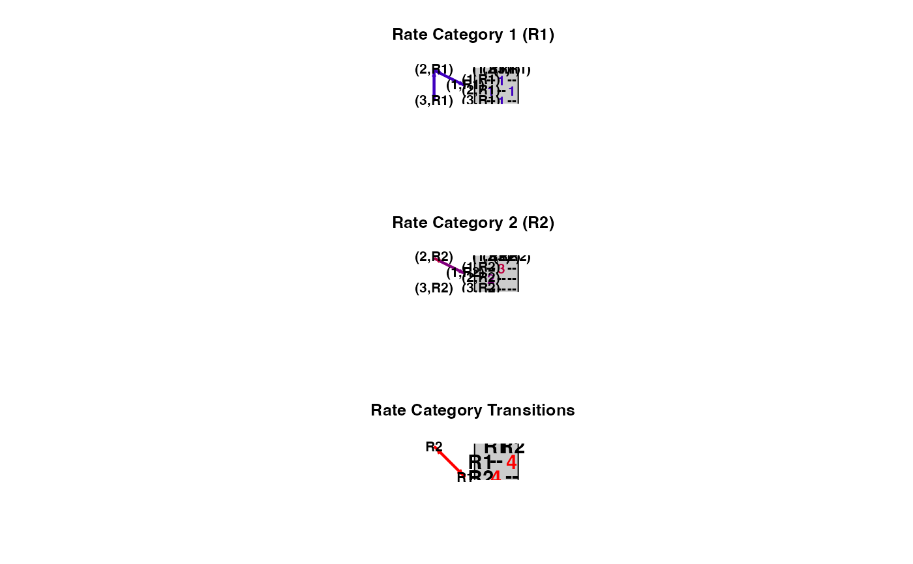
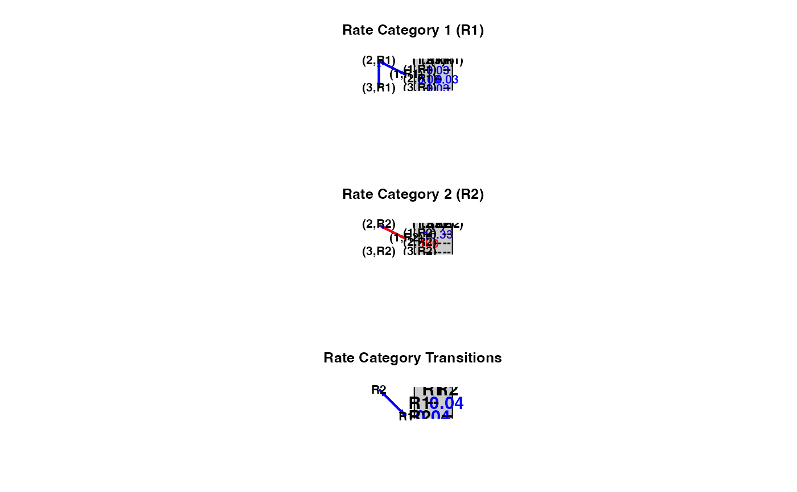

plotMKmodel.RdPlots a diagram of a Markov model from the output of corHMM or a custom index matrix
plotMKmodel(corhmm.obj, rate.cat = NULL, display = "column", color = c("blue", "red"),
arrow.scale = 1, text.scale = 1, vertex.scale = 1)an object of class corHMM or matrix.
if using a custom matrix then the number of rate categories must be indicated.
the structure of the plot. one of "column", "square", or "row".
Either, 1. a vector of 2 colors to create a gradient from low transition rates (first element) to high transition rates (second element), or 2. "col.blind" which will use the color pallete "plasma" from viridis.
determines the size of the arrows for the Markov diagram.
determines the size of the text for the plotted matrix.
determines the size of the text for the Markov diagram.
Plots Markov models in a ball and stick type diagram next to its corresponding matrix. If plotting a hidden rates model it will produce a compound plot describing how the different rate classes are related to one another. If the input is a corHMM result then arrows are colored by relative rate. If the input is a custom matrix arrows are colored by the paramater index.
Returns a ball and stick diagram of the input model.
Boyko, J. D., and J. M. Beaulieu. 2021. Generalized hidden Markov models for phylogenetic comparative datasets. Methods in Ecology and Evolution 12:468-478.
# \donttest{
data(primates)
phy <- primates[[1]]
phy <- multi2di(phy)
data <- primates[[2]]
# create a legend and rate mat from a multi-character dataset.
LegendAndRateMat <- getStateMat4Dat(data)
rate.mat <- LegendAndRateMat$rate.mat
legend <- LegendAndRateMat$legend
# To create a hidden markov model first define your rate classes (state-dependent processes)
# R1 will be a manually created SYM model
R1 <- equateStateMatPars(rate.mat, c(1:6))
# R2 will only allow transitions between 1 and 2
R2 <- dropStateMatPars(rate.mat, c(3,4))
# R1 and R2 will transtion at equal rates (i.e. the parameter process will be ER)
P <- getRateCatMat(2)
P <- equateStateMatPars(P, c(1,2))
# combine our state-dependnet processes and parameter process
HMM <- getFullMat(list(R1, R2), P)
# plot the input
plotMKmodel(HMM, rate.cat = 2)

# This can now be used in a corHMM model
CustomModel <- corHMM(phy = phy, data = data, rate.cat = 2, rate.mat = HMM, node.states = "none")
#> Warning: Branch lengths of 0 detected. Adding 1e-5 to these branches.
#> State distribution in data:
#> States: 1 2 3
#> Counts: 29 10 21
#> Beginning thorough optimization search -- performing 0 random restarts
# plot the output
plotMKmodel(CustomModel)

# }